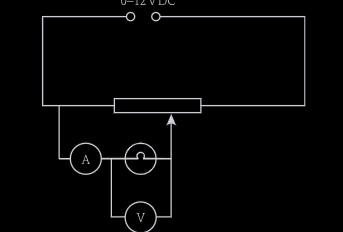
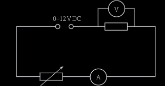
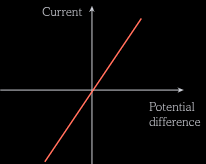
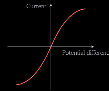
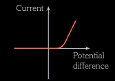
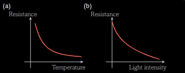

Created with Adobe Dreamweaver CS4 (2002), hosted on Github Pages. This website is best viewed on Internet Explorer 8 or equivalent, with a 64KB/S or greater modem, and Jetbrains Mono, because it's the best font ever!
Home | Omni-Index | Physics / Module 4 / Chapter 4.2
DO:





